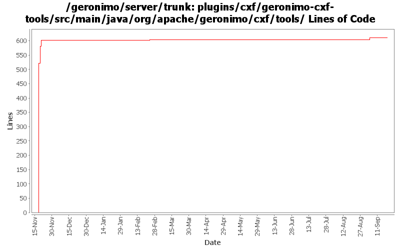

[root]/plugins/cxf/geronimo-cxf-tools/src/main/java/org/apache/geronimo/cxf/tools

| Author | Changes | Lines of Code | Lines per Change |
|---|---|---|---|
| Totals | 14 (100.0%) | 627 (100.0%) | 44.7 |
| gawor | 10 (71.4%) | 614 (97.9%) | 61.4 |
| xuhaihong | 2 (14.3%) | 8 (1.3%) | 4.0 |
| djencks | 2 (14.3%) | 5 (0.8%) | 2.5 |
GERONIMO-4566 don't include jsps, welcome file processing is fixed. Update jetty7 version. Use all the release versions up for vote, so include repos for them. Use snapshot xmlbean-maven-plugin. Make more junit-4 friendly by renaming some test helper classes. Mostly merge of rev 816732 from branches/2.2
0 lines of code changed in 1 file:
GERONIMO-4677 GShell jaxws commands should provide help in a uniform way
8 lines of code changed in 2 files:
fix usage info for cxf-tools. Patch from Chi Runhua (GERONIMO-4676)
1 lines of code changed in 1 file:
GERONIMO-4293 A lot more generics updates in kernel
5 lines of code changed in 1 file:
disable infoset support (part of GERONIMO-4351)
4 lines of code changed in 1 file:
a basic test for cxf jaxws tools and a fix to resolve java.io.tmpdir properly (part of GERONIMO-4351)
22 lines of code changed in 1 file:
rename java2wsdl to java2ws command to match cxf name (part of GERONIMO-4351)
66 lines of code changed in 3 files:
mostly working plugin that uses CXF tooling to generate WSDL and other artifacts for JAX-WS services (GERONIMO-4351)
521 lines of code changed in 4 files: